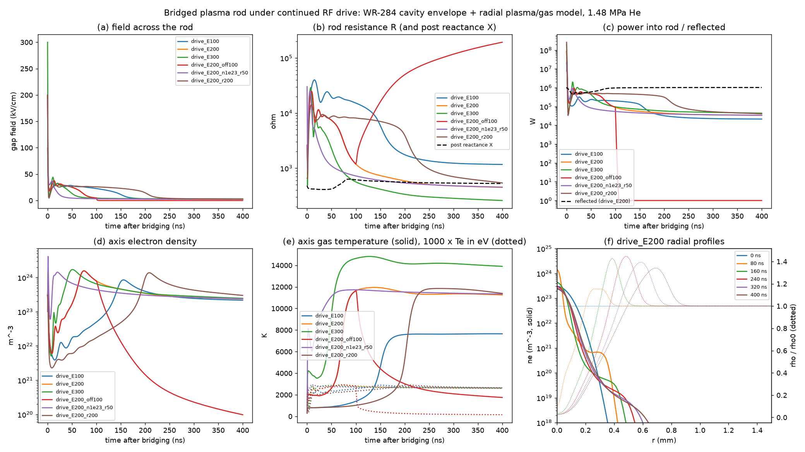

Plasma switch in a WR-284 cavity
He at 1.48 MPa (200 psig), 2.95 GHz, loaded Q 331. The laser runs along x, perpendicular to E (0.75 mJ, 1 ns, 20 µm waist),
and the RF drive is switched off 100 ns after the laser.
All results are simulated, not measured. Model fields are nominal swarm fields; the breakdown-probability
model needed a ×3.91 field calibration to match the measured thresholds, so absolute thresholds here are likely too high
by a similar factor.
← dynamics viewer · data, source and report
1. Rod growth along E in 3D
Interactive viewers (drag to orbit, slider for time). Each shows a 24 mm window around the laser crossing:
300 kV/cm ·
200 kV/cm ·
150 kV/cm ·
100 kV/cm ·
100 kV/cm, focus 20 mm off
| Nominal E0 | First rod | Longest rod | Bridge (34 mm) | Lowest E0 while driven |
|---|
| 300 kV/cm | 0.41 ns | 34 mm | 1.47 ns (3 rods) | 77 kV/cm |
| 200 kV/cm | 1.26 ns | 33 mm | 4.69 ns (central rod) | 71 kV/cm |
| 150 kV/cm | 3.0 ns | 30 mm | none (stalls) | 25 kV/cm |
| 100 kV/cm | 12.1 ns | 22 mm | none | 39 kV/cm |
| 75 kV/cm | 39 ns | 4 mm | none | 75 kV/cm |
| 50 kV/cm | none | — | none | 50 kV/cm |
Rods grow along E from the laser line to both broad walls. Several partial rods drain the cavity faster than the
forward power can refill it (36 ns). Below about 200 kV/cm (nominal) the cavity field collapses before any rod bridges.
Laser energy and focus change the onset only near threshold: at 100 kV/cm, onset is 10.6 / 12.1 / 13.9 ns for 1 / 0.75 / 0.5 mJ,
17 ns with a 10 mm focus offset and almost none at 20 mm.

2. Seed source in sealed helium
Helium cannot be photo-ionized at this intensity: 11-photon ionization gives about 5e-21 electrons per shot.
The consistent seed is 4-photon ionization of a trace organic impurity (8.8 eV, 0.1 ppm assumed), giving about 260 electrons per shot.
It scales as about E4 and falls with focus offset, as observed. Photodetachment of O2−
(about 80 electrons from the previous shot) rises with focus offset, the opposite of the observed trend, so it is not the main seed.

3. Plasma under continued RF drive
After bridging:
- Glow phase: gap field about 25–30 kV/cm, Te about 2.7 eV, gas below 2–4 kK, lasting 40–200 ns.
- Thermal glow-to-arc transition: the gas heats to 8–15 kK and the rod resistance falls below the post reactance
(446 Ω at 200 kV/cm). The gap field drops to about 2.5 kV/cm, the rod takes only 20–45 kW, and most of the forward power is reflected.
- Afterglow: with the drive off, ne decays from about 1e24 to 1e20 m−3 in about 300 ns.
